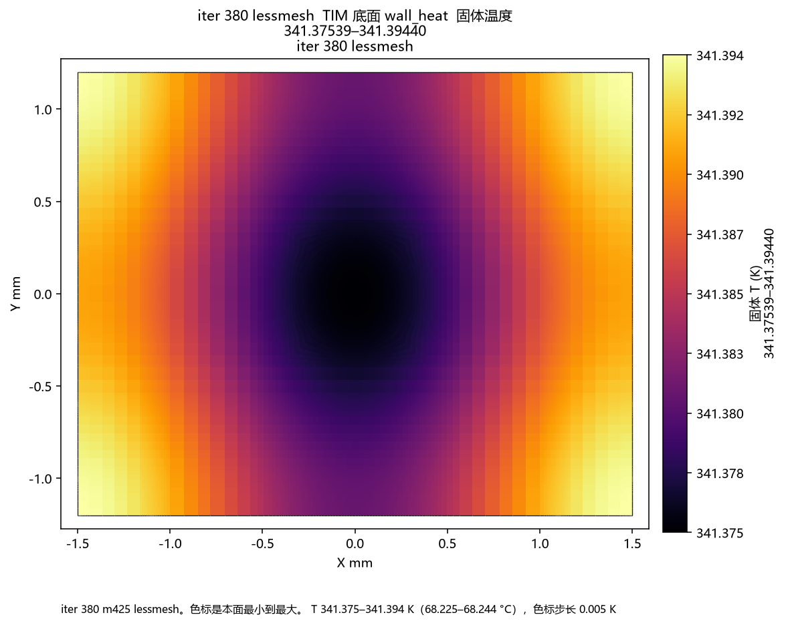
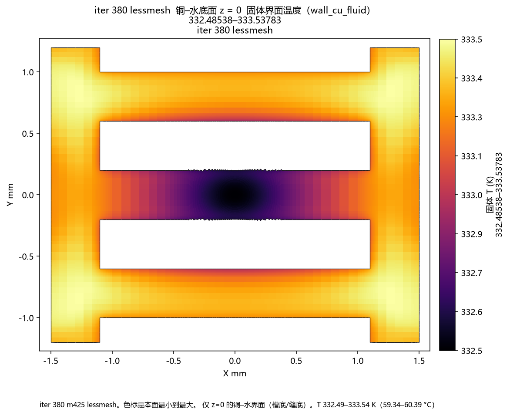
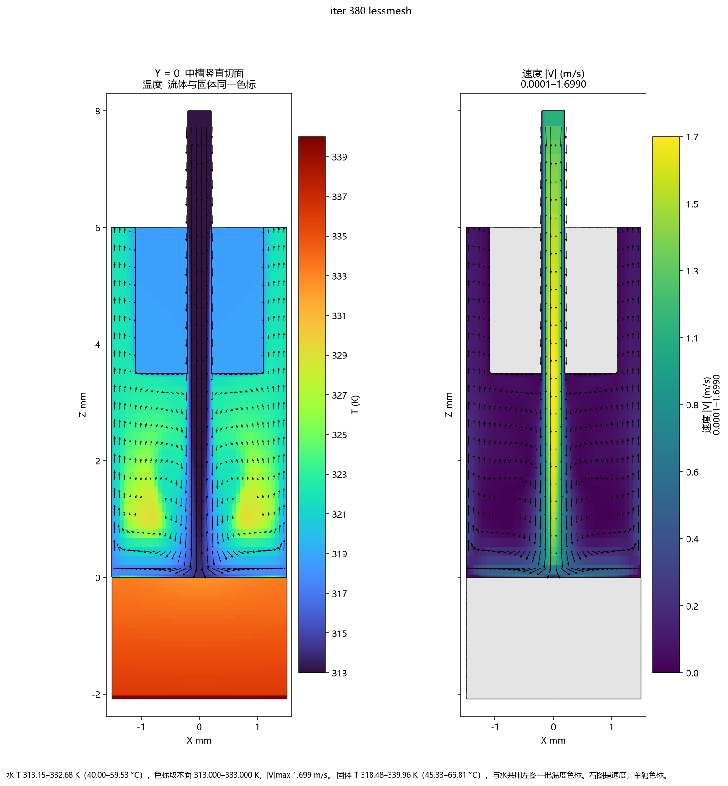
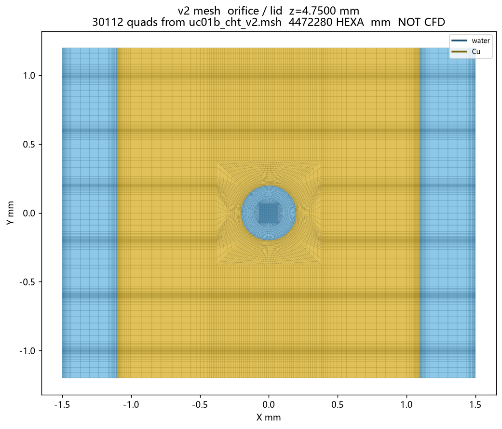
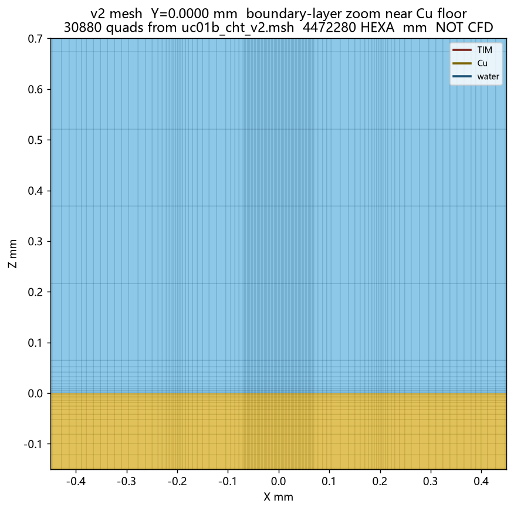

**文档编号：** AIDC-B300-CFD-UC01b-LESS-RES-001
**日期：** 2026-09-25
**性质：** 当前设计点的运行记录。数字来自 `logs/fluent_cht_less_m425_gpu.log`，iter 380。网格是加密后的 4,259,680 HEXA。不是旧的 567460.32 W/m²、0.0002067 kg/s 场，也不是上一份 2,115,436 单元、iter 421 的场。
场：`fluent/uc01b_cht_less_m425_bc216.cas.h5` / `.dat.h5`。网格：`mesh/uc01b_cht_less.msh`（2026-09-25 11:42）。
| 项 | 值 |
|---|---|
| 孔数 | 每颗 die **108**，两颗 **216**。单孔模型，进口区只有一个孔 |
| 胞尺寸 | Y（导流槽所在的跨槽方向）**2.4 mm**，X 沿槽 **3.0 mm**。孔距未压缩，孔心未移动 |
| 热流 | `wall_heat` **579282 W/m²**（57.928 W/cm²） |
| 流量 | `inlet_jet`（单孔）**1.225×10⁻⁴ kg/s**。不是 ×108，也不是 ×216 |
| 入口温度 | 313.15 K |
| 网格 | Fluent 读入 **2055516 + 2083716 + 120448 = 4259680** HEXA。边界层首层 2.5 μm，n_BL=10，增长 1.2 |
| 平面加密 | 孔外过渡段均匀 **0.080 mm**（原 0.354 mm）；缝唇外侧 **0.0675 mm**（原 0.135 mm）；槽芯 Y **0.045 mm × 6**（原 0.090 mm × 3）；肋芯 **0.068 mm**（原 0.135 mm） |
| 求解 | 3ddp **-t4 -gpu**，桌面 GUI，无 `-g`。SST k-ω，能量，共轭。iter **380** 已收敛 |
启动命令：
"E:\cae\programfiles\Ansys2026\ANSYS Inc261\v261\fluent\ntbin\win64\fluent.exe" 3ddp -r26.1.0 -t4 -gpu -i fluent\uc01b_cht_less_m425_bc216.jou
`FLUENT_INC` 是目录 `...\v261\fluent`。窗口标题：`uc01b_cht_less_m425_bc216 Parallel Fluent@DESKTOP-JHEHF28 [3d, dp, pbns, sstkw, 4-processes, gpu]`，会话 1。期刊没有 `/exit`，窗口在写完 cas/dat 后仍开着。
380 6.2412e-07 6.2793e-07 1.9747e-06 2.6352e-06 9.9059e-07 1.1046e-06 1.6245e-04 ! 380 solution is converged
| 量 | iter 380 | 判据 |
|---|---|---|
| continuity | 6.241e-07 | < 1e-4 |
| x / y / z | 6.279e-07 / 1.975e-06 / 2.635e-06 | < 1e-4 |
| energy | 9.906e-07 | < 1e-6 |
| k / omega | 1.105e-06 / 1.625e-04 | < 1e-3 |
前 300 步一阶，之后二阶。coupled + pseudo-transient。GPU：4 个进程共用 RTX 4090。
q'' = 579282 W/m²。A_cell = 3.0×2.4 mm² = 7.20×10⁻⁶ m²。
P_cell = **4.17083 W**。N = **216**。P_2die = **900.899 W**。T_in = 313.15 K。
| 量 | Fluent 打印 |
|---|---|
| T_in (`inlet_jet`) | **313.15 K** |
| T_out (`return_slot`，面积加权) | **320.910 K** |
| T_TIM 底 (`wall_heat`) | **341.385 K** |
| T_铜–水 (`wall_cu_fluid`) | **326.600 K** |
| T_TIM–铜 (`wall_tim_cu`) | **336.130 K** |
| 热流 (`wall_heat`) | **579282 W/m²** |
| P_in | **1087.09 Pa** |
| P_out | **0 Pa** |
| 静压 ΔP | **1087.09 Pa = 1.087 kPa** |
R(T_TIM−T_in)_2die = (341.38529−313.15)/900.899 = **0.03134 K/W**。单胞 **6.770 K/W**。已含 TIM、铜、对流，不要再加 R_TIM2、R_wall。
R_conv,2die = (326.59968−313.15)/900.899 = **0.01493 K/W**。单胞 **3.225 K/W**。
h(TIM 底) = q''/(T_TIM−T_in) = **2.052×10⁴**。h(铜–水，同一 q'') = **4.307×10⁴**，不是湿面局部对流系数。
R_wall（一维，A_2DIE=1512 mm²）= 0.003392 K/W。
**R_c-in = (0.004–0.008)+0.003392+0.01493 = 0.02232–0.02632 K/W。**
**R_j-in = (0.008–0.012)+R_c-in = 0.03032–0.03832 K/W。**
U = 0.9825 m/s，Re_D = **597**。低于 Martin 1977 的 Re≥2000，不引用 Martin h。
T_out 是面积平均。ṁ cp ΔT_area / P_cell = **0.952**，不要当成能量已经闭合。需要的 bulk 温升是 8.147 K（出口 bulk 321.30 K）。
边界条件相同：579282 W/m²，单孔 1.225×10⁻⁴ kg/s。变的是平面上的粗格子。
| 上一份 iter 421 | 本次 iter 380 | |
|---|---|---|
| 单元 | 2,115,436 | **4,259,680** |
| 静压 ΔP | 1091.51 Pa | **1087.09 Pa** |
| T_TIM | 342.096 K | **341.385 K** |
| T_铜–水 | 326.838 K | **326.600 K** |
| T_out | 320.993 K | **320.910 K** |
压降低 4.4 Pa（约 −0.4%），TIM 底低 0.71 K。加密没有改掉设计点的量级。
完整图集在 UC01b_lessmesh_ICEM_Fluent_结果报告_v1.0.html。下面是同一场 iter 380 的图，路径相对本目录。




